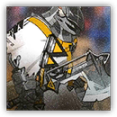

沸血骑士团学徒 Boilblood Knightclub Apprentice
近战 物理；普通 类人（库兰塔）

|
 |
沸血骑士团学徒。沸血骑士团素来以狂野的进攻性闻名，从学徒到贵族骑士，每当有战友倒下他们都会愈战愈勇，作战能力将大幅提升。尽管学徒尚显稚嫩，但那份滚烫的热血早已在血脉中沸腾。 |
沸血骑士团学徒丨Boilblood Knightclub Apprentice
中型类人（库兰塔），混乱中立
| AC 18 | 先攻 +5（15） |
| HP 90（12d8+36） | |
| 速度 35 尺 | |
| 调整 | 豁免 | 调整 | 豁免 | 调整 | 豁免 | |||||||||
|---|---|---|---|---|---|---|---|---|---|---|---|---|---|---|
| 力量 | 17 | +3 | +6 | 敏捷 | 14 | +2 | +2 | 体质 | 16 | +3 | +6 | |||
| 智力 | 10 | +0 | +0 | 感知 | 13 | +1 | +1 | 魅力 | 12 | +1 | +1 |
| 技能 运动+6，威吓+4，察觉+4 |
| 感官 黑暗视觉60尺，被动察觉14 |
| 语言 通用语，卡西米尔语 |
| CR 5（XP 1,800；PB+3） |
特质 Traits
愈战愈勇 Boiling Resolve。每当一名沸血骑士团学徒可见的60尺内的盟友生命值降至0时，该学徒获得一层沸血状态（至多叠加3层）。每层沸血使其近战武器攻击的伤害掷骰获得+2加值。沸血状态持续1分钟。叠加至三层时，学徒免疫恐慌状态且攻击检定具有优势。
动作 Actions
多重攻击 Multiattack。沸血骑士团学徒发动两次沸血战斧攻击。
沸血战斧 Boiling Battleaxe。近战攻击检定：+6，触及5尺。命中：13（2d8+4）挥砍伤害，外加此学徒当前沸血层数×2的伤害。
附赠动作 Bonus Actions
热血突进 Fervent Rush（仅在处于沸血状态时）。沸血骑士团学徒向一名其可见的敌人移动至多等于其速度的距离，此移动不会引发借机攻击。若移动结束时目标处于触及距离内，可以立即对其发动一次沸血战斧攻击。
沸血骑士团精锐 Boilblood Knightclub Elite
近战 物理；精英 类人（库兰塔）

|
沸血骑士团正规骑士。沸血骑士团素来以狂野的进攻性闻名，从学徒到贵族骑士，每当有战友倒下他们都会愈战愈勇，作战能力将大幅提升。正规骑士深谙以血养战之道，战友的倒下非但不会令其退缩，反而成了他狂攻的号角。 |
沸血骑士团精锐丨Boilblood Knightclub Elite
中型类人（库兰塔），混乱中立
| AC 18 | 先攻 +6（16） |
| HP 135（18d8+54） | |
| 速度 35 尺 | |
| 调整 | 豁免 | 调整 | 豁免 | 调整 | 豁免 | |||||||||
|---|---|---|---|---|---|---|---|---|---|---|---|---|---|---|
| 力量 | 18 | +4 | +7 | 敏捷 | 14 | +2 | +2 | 体质 | 16 | +3 | +6 | |||
| 智力 | 11 | +0 | +0 | 感知 | 14 | +2 | +5 | 魅力 | 14 | +2 | +2 |
| 技能 运动+7，威吓+5，察觉+5 |
| 感官 黑暗视觉60尺，被动察觉15 |
| 语言 通用语，卡西米尔语 |
| CR 8（XP 3,900；PB+3） |
特质 Traits
愈战愈勇 Boiling Resolve。每当一名沸血骑士团精锐可见的60尺内的盟友生命值降至0时，该精锐获得一层沸血状态（至多叠加3层）。每层沸血使其近战武器攻击的伤害掷骰获得+2加值。沸血状态持续1分钟。叠加至三层时，精锐免疫恐慌状态且攻击检定具有优势。
破釜沉舟 No Retreat。当沸血骑士团精锐处于沸血状态时，它在朝着可见的敌人移动时无视困难地形。
动作 Actions
多重攻击 Multiattack。沸血骑士团精锐发动两次沸血巨斧攻击。
沸血巨斧 Boiling Greataxe。近战攻击检定：+8，触及5尺。命中：16（2d10+5）挥砍伤害，外加此骑士当前沸血层数×3的伤害。
喋血怒吼 Bloodletting Roar（1/日）。沸血骑士团精锐爆发出一声战吼。感知豁免检定：DC15，源自精锐10尺光环区域内的每个敌人。失败：22（4d10）心灵伤害，并陷入恐慌状态直到其下回合结束。成功：仅半伤。
附赠动作 Bonus Actions
热血突进 Fervent Rush（仅在处于沸血状态时）。沸血骑士团精锐向一名其可见的敌人移动至多等于其速度的距离，此移动不会引发借机攻击。若移动结束时目标处于触及距离内，可以立即对其发动一次沸血巨斧攻击。
反应 Reactions
血债血偿 Blood for Blood（仅在处于沸血状态时）。触发：沸血骑士团精锐被其触及范围内一个敌人的近战攻击命中。响应：该骑士可以对该攻击者发动一次沸血巨斧攻击。